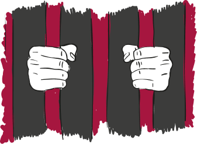

«Нікого не може бути піддано катуванню…»
Ця стаття 3 Конвенції про захист прав людини вкотре нагадує — будьмо людьми з людським обличчям. Не так давно відбувалися страшні злочини концтаборів ХХ століття, ми ще лиш збираємо свідчення про нелюдське поводження до полонених у підвалах так званих «ДНР» і «ЛНР». І тим сумніше чути, що в Україні до людини може застосовуватися покарання, яке принижує людську гідність. Нехай це стосується навіть засудженого до довічного ув’язнення…
…За кілька годин до нового року, у розпал вихідних й очікуванні чудес, до Наталі Гурковської, яка є Регіональним координатором взаємодії з громадськістю Уповноваженого Верховної Ради України з прав людини у Вінницькій області, подзвонили.
Телефонувала дружина одного з довічно ув’язнених, який упродовж останніх чотирьох місяців себе погано почував. Очевидно, настільки погано, що вже не сила було терпіти, коли завершаться вихідні…
Наталя оперативно зв’язалася із медичною частиною закладу, де утримувався засуджений, її запевнили, що на свята хворий не залишиться без нагляду та знеболювальних.
А вже з 2 січня почалася підготовка хворого до огляду, щоб встановити діагноз й запропонувати йому належне лікування. Чоловіка перевели до медичної частини, де він перебував під постійним наглядом.
Майже три тижні досліджень, аналізів, оглядів у лікарів — зрештою, невтішний діагноз. Але після цього стало можливим клопотатися, щоб ув’язненого госпіталізували до лікарні, де йому можна було б отримати спеціалізоване лікування, пройти лікарську консультативну комісію для отримання висновку про наявність групи інвалідності.
Встановлений офіційно діагноз також надавав можливість звернутися до суду із про звільнення від покарання за хворобою (згідно із статтею 84 Кримінального кодексу України).
«Сумнівно, що це історія успіху, — гірко коментує Наталя. — В ув’язненого є адвокат. Якщо адвокат знав, що упродовж чотирьох місяців його підзахисний відчував сильний біль, чому медична частина не надавала допомогу, чому адвокат не звертався до суду із цього приводу, чому досі не звертається до суду про звільнення? Є ж непогані судові рішення…».
Так, зовсім недавно, 23 січня 2020 року, Україна отримала рішення Європейського суду з прав людини щодо справи «Стрюков проти України». Обставини справи дуже схожі: нехтувалося станом здоров’я засудженого, умови його перевезення між СІЗО, судовими слуханнями та між слідчими ізоляторами були поганими, не надавалася їжа та вода, поруч не було лікаря. Ув’язнений настільки погано себе почував, що під час слухань йому не раз викликали швидку допомогу. Ця історія сумно закінчилася для позивача — він помер від туберкульозу, хвороби, яку можна було вилікувати, як тільки її діагностували на ранній стадії...
Уже матір представляла сина в судах з тим, щоб отримати не тільки справедливе рішення щодо справи сина. А й змінити ставлення держави України до тих, хто з різних причин опинився в місцях несвободи.